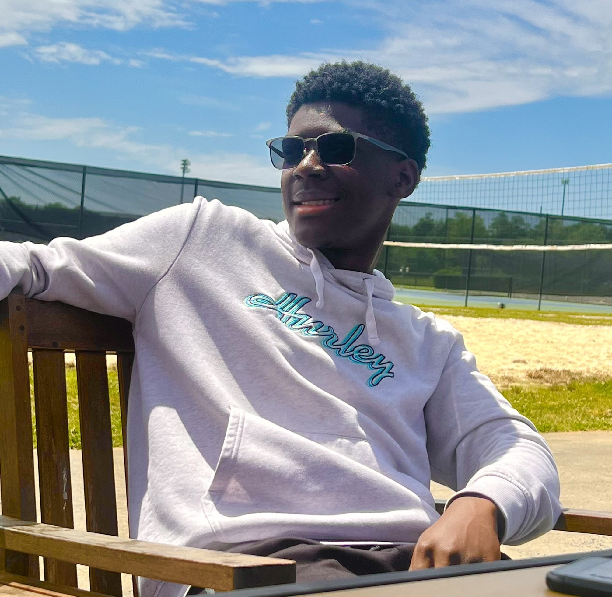

Introduction
Randy Brown

I'm a sophomore at UNC Charlotte studying Computer Science with a concentration in Cybersecurity. I am excited to learn more about building web applications.
- Personal Background: I am going to be 20 years old. I like playing video games and smelling new fragrances.
- Professional Background: Currently I am a sales apprentice at Discount Tire, and work at Harris Teeter and a bagger previously.
- Academic Background: I am a sophomore at UNC Charlotte. I am majoring in computer science with a concentration in cyber security.
- Background in Subject: I know the very little of the fundamentals and basics of cyber security, with very little experience.
- Primary Work Computer: I just got a new Lenovo Yoga 7i ultra 5 16”
- Backup Work Computer & Location Plan: I still have my windows HP laptop I can use as a backup.
- Courses I'm Taking, & Why:
- MATH1242 - Calculus ll: Required class.
- ITSC3160 - Database Design and Implementation: Required and interesting class.
- ITSC2181 - Intro to Computer Systems: Required class and interesting.
- GEOG1105 - Competitive Cyber Defense: Needed a class.
- ITIS3135 - Front-End Web App Development: Required class and interesting.
- Funny/Interesting item to remember me by: I really like fragrances.
- I'd also like to share: I was born in Ghana.
"Be yourself; everyone else is already taken" - Oscar Wilde